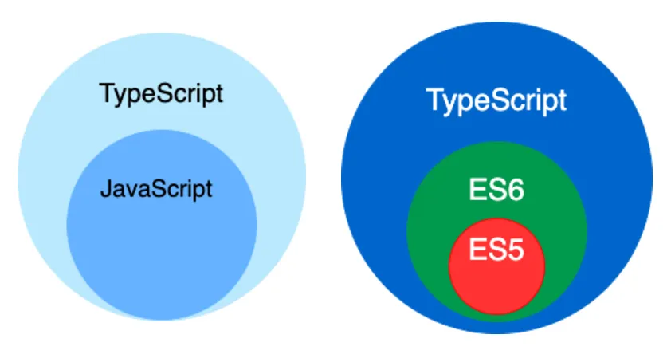

资源
正文
一、TypeScript 简介

TypeScript 由微软开发，是基于 Javascript 的一个扩展语言 。
TypeScript 包含了 JavaScript 的所有内容，即：TypeScript 是 JavaScript 的超集 。
Typescript 增加了：静态类型检查、接口、泛型等很多现代开发特性 ，因此更适合大型项目 的开发。
TypeScript 需要编译 为 JavaScript ，然后交给浏览器或其他 JavaScript 运行环境执行。
二、为何需要 TypeScript
1. 今非昔比的 Javascript
JavaScript 当年诞生时的定位是浏览器脚本语言 ，用于在网页中嵌入一些简单的逻辑 ，而且代码量很少。
随着时间的推移，JavaScript 变得越来越流行，如今的 JavaScript 已经可以全栈编程 了。
现如今的 JavaScript 应用场景 比当年丰富 的多，代码量 也比当年大 很多，随便一个JavaScript 项目的代码量，可以轻松的达到几万行，甚至十几万行！
然而 JavaScript 当年“出生简陋 ”，没考虑到如今的应用场景和代码量，逐渐的就出现了很多困扰 。
2. Javascript 中的困扰
1. 不清不楚的数据类型
1 2 let welcome ='hello' welcome ()
2. 有漏洞的逻辑
1 2 3 4 5 6 7 const str = Date .now () % 2 ? '奇数' : '偶数' if (str !== '奇数' ) {alert ('hello' )else if (str === '偶数' ) {alert ('world' )
3. 访问不存在的属性
1 2 const obj = {width : 10 , height : 15 };const area = obj.width * obj.heigth ;
4. 低级的拼写错误
1 2 const message = 'hello, world!' toUperCase ()
3. 静态类型检查
在代码运行前进行检查，发现代码的错误或不合理之处，减小运行时异常的出现的几率，此种检查叫『静态类型检查 』，TypeScript 和核心就是「静态类型检查』，简言之就是把运行时的错误前置 。
同样的功能，TypeScript 的代码量要大于 JavaScript，但由于 TypeScript 的代码结构更加清晰，在后期代码的维护中 TypeScript 却远胜于 JavaScript。
三、编译 TypeScript
浏览器不能直接运行 TypeScript 代码，需要编译为 JavaScript 再交由浏览器解析器执行。
1. 命令行编译（几乎不用）
要把 .ts 文件编译为 .js 文件，需要配置 Typescript 的编译环境，步骤如下:
1 2 3 4 5 const person = {name : '李四' ,age : 18 console .log (`我叫${person.name} ，我今年${person.age} 岁了` )
得到 js 文件：
1 2 3 4 5 var person = {name : '李四' ,age : 18 console .log ("\u6211\u53EB" .concat (person.name , "\uFF0C\u6211\u4ECA\u5E74" ).concat (person.age , "\u5C81\u4E86" ));
2. 自动化编译
1 2 3 4 5 6 7 8 9 10 11 12 13 tsc --init
第二步 ：这将在项目工程中得到 tsconfig.json，进去把下面这段取消注释，以在 .ts 编写错误时不再自动编译。
如果第二步没有做，也可以这么处理：
1 tsc --noEmitOnError --watch
四、类型声明
使用 : 来对变量或函数形参，进行类型声明：
1 2 3 4 5 6 7 8 9 10 11 12 13 14 15 16 17 18 19 20 21 22 23 let a : string let b : number let c : boolean 'hello' 100 666 '你好' true 666 function demo (x :number , y :number number return x + ydemo (100 , 200 )demo (100 , '208' ) dema (100 ,200 ,300 ) demo (100 )
在 : 后也可以写字面量类型 ，不过实际开发中用的不多（感觉像 const）。
1 2 3 4 let a :'你好’ // a 的值只能为字符串“你好” let b: 100 // b 的值只能为数字 100 a = ' 欢迎" // 警告不能将类型“" 欢迎"”分配给类型“" 你好"” b = 200 // 警告：不能将类型“200”分配给类型“100”
五、类型推断
TS 会根据我们的代码，进行类型推导，例如下面代码中的变量 d，只能存储数字
但要注意，类型推断不是万能的，面对复杂类型时推断容易出问题，所以尽量还是明确的编写类型声明！
六、类型总览
JS 中的数据类型
stringnumberbooleannullundefinedbigint（大整型）symbolobject
备注：其中 object 包含：Array、Function、Date、Error 等
TS 中的数据类型
上述所有 JS 类型
六个新类型：
anyunknownnevervoidtupleenum
两个用于自定义类型的方式：
typeinterface
注意点
在 Javascript 中的这些内置构造函数：Number、String、Boolean 它们用于创建对应的包装对象，在日常开发时很少使用，在 TypeScript 中也是同理，所以在 Typescript 中进行类型声明时，通常都是用小写的 number、string、boolean。
1 2 3 4 5 6 7 8 9 10 let str1 : string 'hello' new String ('hello' ) let str2 : String 'hello' new String ('hello' )console .log (typeof str1)console .log (typeof str2)
原始类型 VS 包装对象
原始类型 ：如 number、string、boolean，在 JavaScript 中是简单数据类型，它们在内存中占用空间少，处理速度快。包装对象 ：如 Number 对象、String 对象、Boolean 对象，是复杂类型，在内存中占用更多空间，在日常开发时很少由开发人员自己创建包装对象。
自动装箱 ：JavaScript 在必要时会自动将原始类型包装成对象，以便调用方法或访问属性。
1 2 3 4 5 6 7 8 9 10 11 12 13 14 15 16 17 let str ='hello"; // 当访问 str.length 时，JavaScript 引擎做了以下工作： let size = (function(){ // 1. 自动装箱：创建一个临时的 string 对象包装原始字符串 let tempstringobject = new string(str); // 2. 访问 String 对象的 length 属性，由于 JS 会自动装箱，因此这个属性是可以访问到的 let lengthValue = tempstringobject.length; // 3. 销毁临时对象，返回长度值 // (Javascript 引擎自动处理对象销毁，开发者无感知） return lengthValue; })(); console,log(size); // 输出：5
七、常用类型
1. any
any 的含义是：任意类型，一旦将变量类型限制为 any，那就意味着放弃了对该变量的类型检查。
1 2 3 4 5 6 7 8 9 10 11 12 13 let a : any 100 '你好 a = false // 没有明确的表示 b 的类型是 any，但 TS 主动推断出来 b 是 any-隐式的 any let b // 以下对 b 的赋值，均无警告 b = 100 b =' 你好false
注意点：any 类型的变量，可以赋值给任意类型的变量。
1 2 3 4 5 6 let c :any 9 let x : string
2. unknown
unknown 的含义是：未知类型 。
unknown 可以理解为一个类型安全的 any ，适用于：不确定数据的具体类型。
1 2 3 4 5 6 7 8 9 10 11 let a : unknown 100 false '你好' let x : string
unknown 会强制开发者在使用之前进行类型检查 ，从而提供更强的类型安全性。
1 2 3 4 5 6 7 8 9 10 11 12 13 14 15 let a : unknown 'hello' if (typeof a ==='string' ) {console .log (x)as string string >a
读取 any 类型数据的任何属性都不会报错，而 unknown 正好与之相反。
1 2 3 4 5 6 7 8 9 10 11 12 let str1 : string 'hello' toUppercase () let str2 : any 'hello' toUppercase () let str3 : unknown 'hello' toUppercase () as string ).toUpperCase ()
3. never
never 的含义是：任何值都不是，简言之就是不能有值，undefined、null、''、0 都不行！
几乎不用 never 去直接限制变量 ，因为没有意义，例如：
1 2 3 4 5 6 7 8 let a : never 1 true undefined null
never 一般是 TypeScript 主动推断出来的，例如：
1 2 3 4 5 6 7 8 9 10 let a : string 'hello' if (typeof a ==='string' ) {console .log (a.toUppercase ())else {console .log (a)
1 2 3 4 function throwError (str : string never {throw new Error ('程序异常退出:' + str)
4. void
void 通常用于函数返回值声明，含义：【函数不返回任何值，调用者也不应依赖其返回值进行任何操作】
1 2 3 4 function logMessage (msg :string void {console .log (msg)logMessage ('你好' )
编码者没有编写 return 去指定函数的返回值，所以 logMessage 函数是没有显式返回值的，但会有一个隐式返回值，就是 undefined，即：虽然函数返回类型为 void，但也是可以接受 undefined 的，简单记：undefined 是 void 可以接受的一种“空”。
1 2 3 4 function logMessage (msg :string void {console .log (msg)
1 2 3 4 function logMessage (msg :string undefined {console .log (msg)
1 2 3 4 5 let result = logMessage ('你好' )if (result) { console .log ('logMessage 有返回值' )
理解 void 与 undefined
void 是一个广泛的概念，用来表达“空”，而 undefined 则是这种“空”的具体实现之一。因此可以说 undefined 是 void 能接受的“空”状态的一种具体形式。
换句话说：void 包含 undefined，但 void 表达的语义超越了单纯的 undefined，它是一种意图上的约定，而不仅仅是特定值的限制。
总结 ：若函数返回类型为 void，那么：
从语法上讲：函数是可以返回 undefined 的，至于显示返回，还是隐式返回，这无所谓！
从语义上讲：函数调用者不应关心函数返回的值，也不应依赖返回值进行任何操作！即使返回了 undefined 值。
5. object
关于 object 与 Object，直接说结论：实习开发中用的相对较少，因为范围太大了。
object（小写）
object（小写）的含义是：所有非原始类型 ，可存储：对象、函数、数组等，由于限制的范围比较宽泛，在实际开发中使用的相对较少 。
1 2 3 4 5 6 7 8 9 10 11 12 13 14 15 16 let a :object name : '张三' }1 , 3 , 5 , 7 , 9 ]function (new string ('123' )class Person {}new Person ()1 true '你好' null undefined
Object（大写）
官方描述：所有可以调用 Object 方法的类型。
简单记忆：除了 undefined 和 null 的任何值。
由于限制的范围实在太大了 ！所以实际开发中使用频率极低 。
声明对象类型
1 2 3 4 5 6 7 8 9 10 11 12 13 14 15 16 17 18 19 let person1 : {name : string , age?: number }let person2 : {name : string ; age?: number }let person3 : {name : string number name : '李四' , age : 18 }name : '张三' }name : '王五' }name : '王五' , gender : '男' }
索引签名
允许定义对象可以具有任意数量的属性 ，这些属性的键 和类型 是可变的 ，常用于：描述类型不确定的属性，(具有动态属性的对象)。
1 2 3 4 5 6 7 8 9 10 11 12 13 let person : {name : string ,number ,key :string ]: any name :'张三' ,age :18 ,gender :'男'
声明函数类型
1 2 3 4 5 6 let count : (a : number , b : number number function (x, y )return x + y
TypeScript 中的 => 在函数类型声明时表示函数类型 ，描述其参数类型 和返回类型 。
JavaScript 中的 => 是一种定义函数的语法，是具体的函数实现。和
函数类型声明还可以使用：接口、白定义类型等方式。
声明数组类型
1 2 3 4 5 let arr1 : string []let arr2 : Array <string >'a' , 'b' , 'c' ]'hello' , 'world' ]
上述代码中的 Array<string> 属于泛型，下文会详细讲解。
6. tuple
元组（Tuple）是一种特殊的数组类型 ，可以存储固定数量 的元素，并且每个元素的类型是已知的 且可以不同 。元组用于精确描述一组值的类型，? 表示可选元素。
1 2 3 4 5 6 7 8 9 10 11 12 13 14 let arr1 : [string , number ]let arr2 : [number , boolean ?]let arr3 : [number , ...string []]'hello' , 123 ]100 , false ]200 ]100 , 'hello' , 'world' ]100 ]'hello' , 123 , false ]
7. enum
枚举（enum）可以定义一组命名常量 ，它能增强代码的可读性 ，也让代码更好维护 。
如下代码的功能是：根据调用 walk 时传入的不同参数，执行不同的逻辑，存在的问题是调用 walk 时传参时没有任何提示，编码者很容易写错字符串内容；并且用于判断逻辑的 up、down、left、right 是连续且相关的一组值 ，那此时就特别适合使用枚举（enum） 。
数字枚举
使用枚举 使用枚举
1 2 3 4 5 6 7 8 9 10 11 12 13 14 15 16 17 18 19 function walk (str :string if (str === 'up' ) {console .log ("向【上】走" );else if (str === 'down' ) {console .log ("向【下】走" );else if (str === 'left' ) {console .1og("向【左】走" );else if (str === 'right' ) {console .log ("向【右】走" );else {console .log ("未知方向" );walk ("up" )walk ("down" )walk ('left' )walk ('right' )
数字枚举一种最常见的枚举类型，其成员的值会自动递增 ，且数字枚举还具备反向映射 的特点，在下面代码的打印中，不难发现：可以通过值 来获取对应的枚举成员名称 。
1 2 3 4 5 6 7 8 9 10 11 12 13 14 15 16 17 18 19 20 21 22 23 24 25 26 27 28 enum Direction {Up ,Down ,Left ,Right console .log (Direction ); console .log (Direction .up );console .log (Direction [0 ]);Direction .Up = "shang"
1 2 3 4 5 6 7 8 9 10 "use strict" ;var Direction ;function (Direction ) {Direction [Direction ["Up" ] = 0 ] = "Up" ;Direction [Direction ["Down" ] = 1 ] = "Down" ;Direction [Direction ["Left" ] = 2 ] = "Left" ;Direction [Direction ["Right" ] = 3 ] = "Right" ;Direction || (Direction = {}));let dir = Direction .Up ;console .log (dir);
字符串枚举
枚举成员的值是字符串（自行定义，此时没有反向映射）。
1 2 3 4 5 6 7 8 9 enum Direction {Up = "up" ,Down = "down" ,Left = "left" ,Right = "right" let dir : Direction = Direction .Up ;console .log (dir);
1 2 3 4 5 6 7 8 9 10 "use strict" ;var Direction ;function (Direction ) {Direction ["Up" ] = "up" ;Direction ["Down" ] = "down" ;Direction ["Left" ] = "left" ;Direction ["Right" ] = "right" ;Direction || (Direction = {}));let dir = Direction .Up ;console .log (dir);
常量枚举
官方描述：常量枚举是一种特殊枚举类型，它使用 const 关键字定义，在编译时会被内联 ，避免生成一些额外 的代码。
使用常量枚举的 TypeScript 代码如下：
1 2 3 4 5 6 7 8 const enum Directions {Up ,Down ,Left ,Right let x = Direction .Up ;
编译后生成的 JavaScript 代码量较小：
8. type
type 可以为任意类型创建别名，让代码更简洁、可读性更强，同时能更方便地进行复用和扩展。
基本用法
类型别名使用 type 关键字定义，type 后跟类型名称，例如下面代码中 num 是类型别名。
1 2 3 4 type num = number ;let price : num;100
联合类型
联合类型是一种高级类型，它表示一个值可以是几种不同类型之一。
1 2 3 4 5 6 7 8 9 10 11 12 13 14 15 16 type status = number | string type Gender = '男' | '女' function printstatus (status : Status console .log (status);function logGender (str :Gender console .log (str);printstatus (404 );printstatus ('200' );printstatus ('501' );logGender ('男' );logGender ('女' );
交叉类型
交叉类型（lntersection Types）允许将多个类型合并为一个类型，合并后的类型将拥有所有被合并类型的成员。交叉类型通常用于对象类型。
1 2 3 4 5 6 7 8 9 10 11 12 13 14 15 16 17 18 19 20 21 22 type Area = {height : number ; width : number ; type Address = {num : number ; cell : number ; roon : string ; type House = Area & Address ;const house : House = {height : 180 ,width : 75 ,num : 6 ,cell : 3 ,room :'702'
9. 一个特殊情况
代码段 1（正常）
在函数定义时，限制函数返回值为 void，那么函数的返回值就必须是空。
1 2 3 4 5 6 7 8 9 10 function demo (void {return undefined return 100 return false return null return []demo ()
代码段 2（特殊）
使用类型声明限制函数返回值为 void 时，Typescript 并不会严格要求函数返回空。
1 2 3 4 5 6 7 8 9 10 type LogFunc = () => void const f1 : LogFunc () => {return 180 ; const f2 : LogFunc = () => 280 ; const f3 : LogFunc = function (return 380 ;
为什么会这样？
是为了确保如下代码成立，我们知道 Array.prototype.push 的返回一个数字，而 Array.prototype.forEach 方法期望其回调的返回类型是 void（算了就记这么写 ts 不会报错，但是最好不要这么写）。
1 2 3 4 const src = [1 , 2 , 3 ];const dst = [e];forEach ((el ) => dst.push (el));
10. 复习类相关知识
classDiagram
class Person {
- string name
- number age
+ Person(string name, number age)
+ speak() void
}
class Student {
- string grade
+ Student(string name, number age, string grade)
+ speak() void
}
Person <|-- Student
1 2 3 4 5 6 7 8 9 10 11 12 13 14 15 16 17 18 19 20 21 22 23 24 25 26 27 28 class Person {name : string ;age : number ;constructor (name : string , age : number this .name = name;this .age = age;speak (console .log (`我叫：${this .name} ，今年 ${this .age} 岁了` );class Student extends Person {grade : string ;constructor (name : string , age : number , grade : string super (name, age);this .grade = grade;speak (console .log (`我叫：${this .name} ，今年 ${this .age} 岁了，我在 ${this .grade} 年级上学` );const person = new Person ('张三' , 20 );speak ();
11. 属性修饰符
修饰符
含义
具体规则
public公开的
可以被：类内部、子类、类外部 访问
protected受保护的
可以被：类内部、子类 访问
private私有的
可以被：类内部 访问
readonly只读属性
属性无法修改
1 2 3 4 5 6 7 8 9 10 11 12 13 class Car {constructor ( public vin : string , public year : number , public color : string , public sound : string ){}displayInfo (console .log (`识别码:${this .vin} ，出厂年份:${this .year} ，颜色:${this .color} ，音响:${this .sound} ` );
12. 抽象类
概述：抽象类是一种无法被实例化 的类，专门用来定义类的结构和行为 ，类中可以写抽象方法 ，也可以写具体实现 ，抽象类主要用来为其派生类提供一个基础结构 ，要求其派生类必须实现其中的抽象方法。
简记：抽象类不能实例化 ，其意义是可以被继承 ，抽象类里可以有普通方法 、也可以有抽象方法 。
通过以下场景，理解抽象类：
我们定义一个抽象类 Package ，表示所有包裹的基本结构，任何包裏都有重量属性 weight，包裏都需要计算运费。但不同类型的包裹（如：标准速度、特快专递）都有不同的运费计算方式，因此用于计算运费的 calculate 方法是一个抽象方法，必须由具体的子类来实现。
classDiagram
class Package {
- number weight
+ Package(number weight)
+ calculate() number
+ printPackage() void
}
class StandardPackage {
- number unitPrice
+ StandardPackage(number weight, number unitPrice)
+ calculate() number
}
class ExpressPackage {
- number unitPrice
- number additional
+ ExpressPackage(number weight, number unitPrice, number additional)
+ calculate() number
}
Package <|-- StandardPackage
Package <|-- ExpressPackage
1 2 3 4 5 6 7 8 9 10 11 12 13 14 15 16 17 18 19 20 21 22 23 24 25 26 27 28 29 30 31 abstract class Package {constructor (public weight : number abstract calculate (): number ;printPackage (console .log (`Package weight: ${this .weight} kg, calculated value: ${this .calculate()} ` );class StandardPackage extends Package {constructor (weight : number , public unitPrice : number super (weight); }calculate (return this .weight * this .unitPrice ; }class ExpressPackage extends Package {constructor (weight : number , public unitPrice : number , public additional : number super (weight); }calculate (if (this .weight > 10 ) {return 10 * this .unitPrice + (this .weight - 10 ) * this .additional ;else {return this .weight * this .unitPrice ;const package1 = new StandardPackage (10 , 10 );console .log (package1.calculate ()); const package2 = new ExpressPackage (13 , 8 , 2 );console .log (package2.calculate ());
总结：何时使用抽象类 ？
定义通用接口 ：为一组相关的类定义通用的行为（方法或属性）时。
提供基础实现 ：在抽象类中提供某些方法或为其提供基础实现，这样派生类就可以继承这些实现。
确保关键实现 ：强制派生类实现一些关键行为。
共享 代码和逻辑：当多个类需要共享部分代码时，抽象类可以避免代码重复。
13. interface（接口）
interface 是一种定义结构 的方式，主要作用是为：类、对象、函数等规定一种契约 ，这样可以确保代码的一致性和类型安全，但要注意 interface 只能定义格式，不能包含任何实现！
1 2 3 4 5 6 7 8 9 10 11 12 13 14 15 interface UserInterface { name : string ;readonly gender : string ; number run : (n : number void const user : User = {name : "张三" ,gender : '男' ,age : 18 ，run (n ) {console .log (`奔跑了 ${n} 米` )
14. 一些相似概念的区别
14.1 interface 与 type 的区别
相同点 ：interface 和 type 都可以用于定义对象结构 ，两者在许多场景中是可以互换的。不同点 ：
interface：更专注于定义对象和类的结构，支持继承、合并。type：可以定义类型别名、自联合类型、交叉类型，但不支持继承和自动合并。
八、泛型
泛型允许我们在定义函数、类或接口时，使用类型参数来表示未指定的类型 ，这些参数在具体使用时 ，才被指定具体的类型 ，泛型能让同一段代码适用于多种类型，同时仍然保持类型的安全性。
举例：如下代码中 <T> 就是泛型，（不一定非叫 T），设置泛型后即可在函数中使用 T 来表示该类型：
泛型函数
1 2 3 4 5 6 7 function logData<T>(data : T): T {console .log (data);return data;number >(100 );string >('hello' );
泛型可以有多个
1 2 3 4 5 6 7 function logData<T, U>(data1 : T, data2 : U): T | U {console .log (data1, data2);return Date .now () % 2 ? data1 : data2;number , string >(100 , 'hello' );string , boolean >('ok' , false )
泛型接口
1 2 3 4 5 6 7 8 9 10 11 interface PersonInterface <T> {name : string ,age : number ,extraInfo : Tlet p1 : personInterface<string >;let p2 : personInterface<number >;name : '张三' , age : 18 , extraInfo : '一个好人' };name : '李四' , age : 18 , extraInfo : 250 };
泛型约束
1 2 3 4 5 6 7 8 9 10 interface PersonInterface {name : string ,age : number function logPerson<T extends PersonInterface >(info : T): void {console .log (`我叫 ${info.name} 今年 ${info.age} 岁了` )logPerson ({ name : '张三' , age : 18 });
泛型类
1 2 3 4 5 6 7 8 9 10 11 12 13 14 15 16 17 18 19 20 21 22 class Person <T> {constructor ( public name : string , public age : number , public extraInfo : T ) { }speak (console .log (`我叫 ${this .name} ，今年 ${this .age} 岁了` )console .log (this .extraInfo )const p1 = new Person <number >("tom" , 30 , 250 );type JobInfo = {title : string ;company : string ;const p2 = new Person <JobInfo >("tom" , 30 , {title : "研发总监" , company : "发发发科技公司" })
九、类型声明文件
类型声明文件是 TypeScript 中的一种特殊文件，通常以 .d.ts 作为扩展名。它的主要作用是为现有的 JavaScript 代码提供类型信息使得 TypeScript 能够在使用这些 JavaScript 库或模块时进行类型检查和提示。
demo.js demo.d.ts index.ts
1 2 3 4 5 6 7 export function add (a, b ) {return a + b;export function mul (a, b ) {return a * b;
1 2 3 4 5 declare function add (a : number , b : number number ;declare function mul (a : number , b : number number ;export { add, mul };
1 2 3 4 5 6 import { add, mul } from "./demo.js" const x = add (2 , 3 );const y = mul (4 , 5 );console .log (x, y);